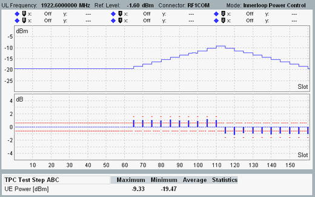
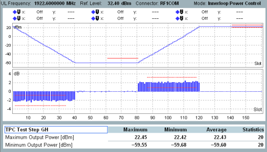

For test preparation, you configure the applications and set up a connection to the UE. Then you perform test step ABC, test step EF and finally test step GH.
Set up an RMC connection. The application sheet "WCDMA Combined Signal Path Measurements" describes the general procedure for connection setup, see "Setting Up a Connection".
Do not modify the expected nominal power mode setting (by default "According to UL Power Control Settings").
Switch to the "WCDMA TPC" measurement:
In the signaling application, press the "WCDMA TX Meas" softkey.
The measurement application is opened and the combined signal path scenario is selected. As a consequence, the trigger source is automatically set correctly (TPC trigger signal) and the most important settings of the signaling application are taken over by the measurement application.
If necessary, select the "TPC Measurement" tab.
Configure the TPC settings:
Press the "Signaling Parameter" softkey followed by the "TPC" hotkey.
Set "Active TPC Setup" to "Closed Loop".
Set "Configuration" to -10 dBm total target power.
Set "Active TPC Setup" to "TPC Test Step ABC".
Close the TPC dialog.
Press "ON | OFF" to start the measurement.
TPC commands are sent to the UE until the UE power reaches -10 dBm. Then TPC commands for test step A, B and C are sent to the UE, using algorithm 2. The UE power is measured during the three test steps.
Evaluate the test results.
The upper diagram displays the UE power vs slot for all three test steps. The lower diagram displays the power steps between the slots. The red lines indicate configured limits.
The scalar view shows statistical values, including power step and power step group results relevant for limit checks. The default limit settings are according to 3GPP TS 34.121. The table highlights, if a result value violates the configured limits.

Configure the TPC settings:
Press the "TPC" hotkey.
Set "Active TPC Setup" to "TPC Test Step EF".
Parameter "Configuration" indicates the number of 0-bits that the R&S CMW sends to the UE during test step E (and 1-bits sent during test step F).
3GPP specifies the number of transmitted TPC commands: at least 10 more commands than the number required for the UE to reach the minimum power threshold during test step E and the maximum power threshold during step F.
By default, the measurement expects 20 TPC commands more than the number required to reach the power threshold, to be able to evaluate the minimum and the maximum output power.
120 bits are usually sufficient. Modify the parameter if necessary.
Close the TPC dialog.
Press "RESTART | STOP" to restart the measurement.
The UE is ordered to maximum output power. Then TPC commands for test step E and F are sent to the UE, using algorithm 1 and a step size of 1 dB. The UE power is measured during the test steps.
Evaluate the test results displayed in the diagram and scalar view.

Configure the TPC settings:
Press the "TPC" hotkey.
Set "Active TPC Setup" to "TPC Test Step GH".
Parameter "Configuration" indicates the number of 0-bits that the R&S CMW sends to the UE during test step G (and 1-bits sent during test step H).
3GPP specifies the number of transmitted TPC commands: at least 10 more commands than the number required for the UE to reach the minimum power threshold during test step G and the maximum power threshold during step H.
By default, the measurement expects 20 TPC commands more than the number required to reach the power threshold, to be able to evaluate the minimum and the maximum output power.
80 bits are usually sufficient. Modify the parameter if necessary.
Close the TPC dialog.
Press "RESTART | STOP" to restart the measurement.
The UE is ordered to maximum output power. Then TPC commands for test step G and H are sent to the UE, using algorithm 1 and a step size of 2 dB. The UE power is measured during the test steps.
Evaluate the test results displayed in the diagram and scalar view.
